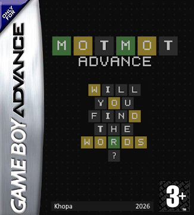

Apps · Game Boy Advance
MotMot Advance
A word-guessing game for the Game Boy Advance: find the 5-letter word in six tries. Classic, Marathon and Time Attack modes, five languages, playable right here thanks to EmulatorJS.
Controls
| Arrow keys | D-pad — move the cursor on the virtual keyboard, navigate menus |
|---|---|
| Z | A — type the selected letter, confirm |
| X | B — delete the last letter, back |
| Enter | START — submit the word |
| V | SELECT — quit the game (asks for confirmation) |
Keys can be remapped, and gamepads are supported, from the settings menu at the bottom right of the screen. Your statistics and records are saved in the browser.